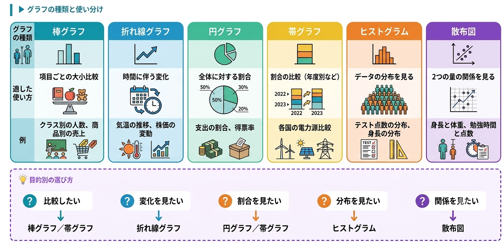
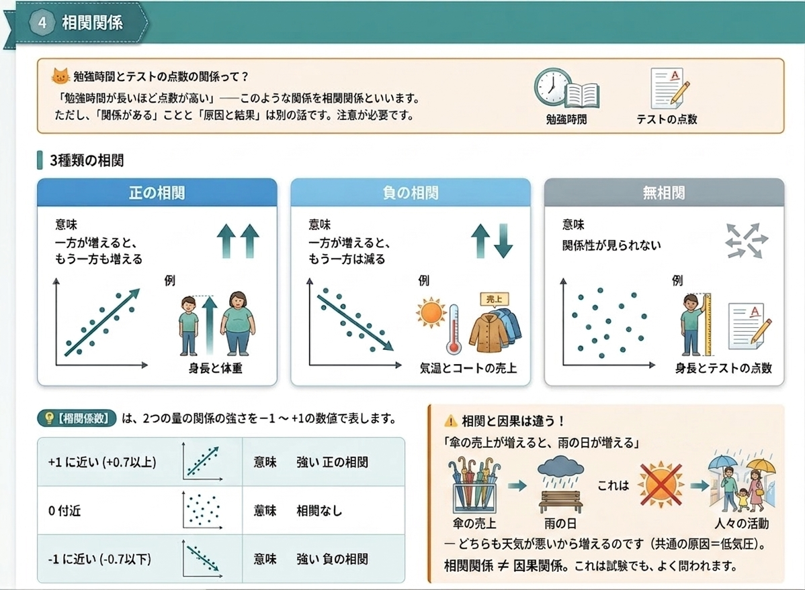

高認情報Ⅰの大問5は、データを読み取って分析する力が問われます。グラフ・代表値・相関――数学が苦手でも、コツをつかめば確実に得点できます。
この単元では、問題解決の進め方とデータ分析の基本を学びます。
テスト勉強で点数が伸びない、ダイエットがうまくいかない、部屋が散らかる――
私たちは日常で多くの「問題」に直面します。これらを段階的に整理して解決する方法があります。
| STEP | 名前 | 内容 |
|---|---|---|
| STEP 1 | 問題発見 | 「何が問題か」を明確にする |
| STEP 2 | 問題分析 | 原因を調べる、データを集める |
| STEP 3 | 解決案検討 | 解決方法を考える、複数の案を比較 |
| STEP 4 | 実施 | 計画を実行する |
| STEP 5 | 評価・改善 | 結果を確認し、次に活かす |
は、問題解決を4ステップでくり返す方法です。多くの企業や学校で使われています。
Plan（計画）→ Do（実行）→ Check（評価）→ Action（改善）
4つの英単語の頭文字を取って「PDCA」。最後の「A」が次の「P」に戻ることで、螺旋状に改善が続くのがポイントです。
問題解決のためのアイデア出しと整理の方法です。
| 【ブレーンストーミング】 | 【KJ法】 |
|---|---|
|
アイデアを大量に出す方法 ・批判しない ・自由奔放 ・量を求める ・便乗OK |
アイデアを整理する方法 ・カードに書く ・グループ分けする ・関係を線で結ぶ ・川喜田二郎が考案 |
※ 問題解決の4ステップを という。アイデアを大量に出す方法を 、 アイデアを整理する方法を という。
テストの平均点をグラフにするとき、円グラフ・棒グラフ・折れ線グラフ――どれを使うべきでしょうか？
実は、データの種類とグラフの種類は対応しているのです。
| 分類 | 種類 | 例 |
|---|---|---|
| 量的データ （数値） |
連続データ | 身長、体重、温度 |
| 離散データ | 人数、点数、回数 | |
| 質的データ （カテゴリ） |
名義データ | 性別、血液型、好きな色 |
| 順序データ | 満足度（5段階）、成績の順位 |

| グラフ | 適した使い方 | 例 |
|---|---|---|
| 棒グラフ | 項目ごとの大小比較 | クラス別の人数、商品別の売上 |
| 折れ線グラフ | 時間に伴う変化 | 気温の推移、株価の変動 |
| 円グラフ | 全体に対する割合 | 支出の割合、得票率 |
| 帯グラフ | 割合の比較（年度別など） | 各国の電力源比較 |
| ヒストグラム | データの分布を見る | テスト点数の分布、身長の分布 |
| 散布図 | 2つの量の関係を見る | 身長と体重、勉強時間と点数 |
比較したい → 棒グラフ／帯グラフ
変化を見たい → 折れ線グラフ
割合を見たい → 円グラフ／帯グラフ
分布を見たい → ヒストグラム
関係を見たい → 散布図
※ 数値で表されるデータを データ、カテゴリで表されるデータを データという。データの分布を見たいときに使うグラフは である。
平均点が70点でも、実は全員が70点とは限りません。
・全員が70点 → 平均70点
・半分が100点、半分が40点 → 平均70点
この2つは全く違うデータなのに、平均は同じです。だから「平均」だけでは不十分なのです。
| 代表値 | 意味 | 計算例 |
|---|---|---|
| 平均値 | すべての値を足して個数で割る | (60+70+80+90+100)÷5 = 80 |
| 中央値（メジアン） | 大小順に並べた真ん中の値 | 60,70,80,90,100 の真ん中 = 80 |
| 最頻値（モード） | 最も多く現れる値 | 70,80,80,80,90 の中で = 80 |
平均値は外れ値（極端な値）に影響されやすいです。
例：5人の年収「300万・350万・400万・450万・1億円」
→ 平均 ≒ 2,500万円（実態とかけ離れる！）
→ 中央値 = 400万円（実態に近い）
外れ値があるときは中央値の方が代表的です。
同じ平均でも、データのバラつき方が違うことがあります。これを表すのが分散と標準偏差です。
| 用語 | 意味 |
|---|---|
| 分散 | 各値が平均からどれだけ離れているかの2乗の平均 |
| 標準偏差 | 分散の平方根（ルート）。データのバラつきの目安 |
| 範囲（レンジ） | 最大値 − 最小値 |
標準偏差が小さい → データが平均近くに集まっている（バラつきが少ない）
標準偏差が大きい → データが広く散らばっている（バラつきが大きい）
テストの偏差値もこの「標準偏差」を使って計算されます。
※ 全データを足して個数で割った値を 、 並べたときの真ん中の値を 、 最も多く現れる値を という。
「勉強時間が長いほど点数が高い」――こんな関係を相関関係といいます。
ただし、「関係がある」ことと「原因と結果」は別の話です。注意が必要です。

| 相関 | 意味 | 例 |
|---|---|---|
| 正の相関 | 一方が増えるともう一方も増える | 身長と体重、勉強時間と点数 |
| 負の相関 | 一方が増えるともう一方は減る | 気温とコートの売上、年齢と握力(高齢) |
| 無相関 | 関係性が見られない | 身長とテストの点数 |
は、2つの量の関係の強さを-1 〜 +1の数値で表します。
| 相関係数の値 | 意味 |
|---|---|
| +1 に近い（+0.7以上） | 強い正の相関 |
| 0 付近 | 相関なし |
| -1 に近い（-0.7以下） | 強い負の相関 |
「アイスクリームの売上が増えると、水難事故が増える」
→ これは「アイスを食べると溺れる」という因果ではありません。
→ どちらも気温が高いから増えるのです（共通の原因＝気温）。
相関関係 ≠ 因果関係。これは試験でもよく問われます。
※ 一方が増えるともう一方も増える関係を 、 一方が増えるともう一方が減る関係を という。関係の強さを示す数値を という。
| 出題パターン | 問われ方の例 | 答えの出し方 |
|---|---|---|
| 問題解決 | 「PDCAサイクルとは？」 | → Plan-Do-Check-Action |
| アイデア法 | 「KJ法は誰が考案？」 | → 川喜田二郎 |
| グラフ選択 | 「人口推移は何グラフ？」 | → 折れ線グラフ |
| 代表値 | 「外れ値があるときは？」 | → 中央値が適切 |
| 相関 | 「相関係数の範囲は？」 | → -1〜+1 |
| 罠 | 「相関 = 因果関係？」 | → 違う！共通原因の可能性 |
PDCA／Plan・Do・Check・Action／ブレーンストーミング／KJ法／
量的データ／質的データ／棒グラフ／折れ線／円／帯／ヒストグラム／散布図／
平均値／中央値／最頻値／分散／標準偏差／
正の相関／負の相関／無相関／相関係数／相関と因果は違う
① 問題解決＝PDCAサイクル／ブレーンストーミング／KJ法
② グラフ＝目的（比較・変化・割合・分布・関係）で使い分ける
③ 代表値＝平均・中央値・最頻値／外れ値があるときは中央値
④ 相関＝正・負・無相関／相関係数(-1〜+1)／相関 ≠ 因果
これらが言えれば、高認大問5は確実に得点できます。